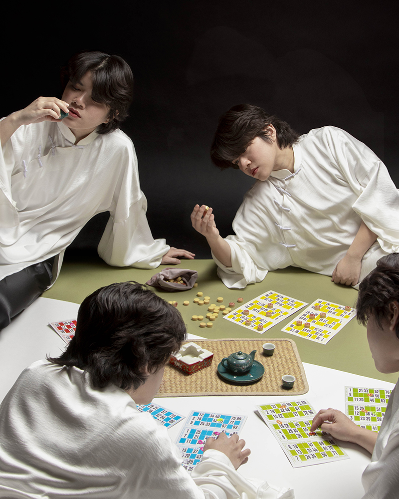

Bio
Jade Nguyễn is a photographer from Ho Chi Minh City currently based in central Illinois. Her documentation of Vietnam highlights its vibrancy, history, and contemporary issues while her work in alternative processes focuses on the ethics of representation in colonial photography. Nguyễn is an Instructional Assistant Professor at Illinois State University. Her work has been featured in many galleries and magazines including Lenscratch, Woman Made Gallery, St. Louis Artist Guild, McLean County Art Center, F-Stop Magazine, and more.
Education
MFA in Photography, Illinois State University, 2021-present.
BFA in Photography and Graphic Design, SUNY Plattsburgh, 2017-2021
Selected Exhibition
A Conversation Between, University Galleries, Illinois State University, Normal, IL, 2025.
Agora, solo exhibition, St. Louis Artists Guild, St. Louis, MO, 2025. →
Photo Triennial: The Photograph as an Art Object, Galesburg Community Arts Center, IL, 2025.
Photography Now, Woman Made Gallery, Chicago, IL, 2025. →
This House is Not For Sale, solo exhibition, McLean County Art Center, Bloomington, IL, 2025.
Student Annual, University Galleries, Illinois State University, Normal, IL, 2024.
polyphony, MFA Thesis Exhibition, University Galleries, Illinois State University, Normal, IL, 2024. →
McLean County Art Exhibition, McLean County Art Center, Bloomington, IL, 2024.
mutualism, two-person exhibition, Julian Gallery, Illinois State University, Normal, IL, 2023
in our place, Midwest Nice Art, Aberdeen, SD, 2023. →
returning to/trở về, two-person exhibition, Central Illinois Regional Airport, Bloomington, IL, 2023. →
14,000km, solo exhibition, Rachel Cooper Gallery, Illinois State University, Normal, IL, 2022. →
McLean County Art Exhibition, McLean County Art Center, Bloomington, IL, 2021.
Awards
Photo Triennial: The Photograph as an Art Object, Runner-Up, Galesburg Community Arts Center, 2025.
McLean County Art Exhibition, 1st-place, McLean County Art Center, 2024.
Lenscratch Student Prize, Top 26, 2023.
Robert Small Award for Writing, Illinois State University, 2023.
Karen Deske Scholarship, Illinois State University, 2023.
Karolee Johnson Memorial Award, Illinois State University, 2023.
Image of Research, 2nd-place, Illinois State University, 2022.
Graduate Student Merit Fellowship, Illinois State University, 2022.
Barbara J. Parnass Scholarship in Photography, SUNY Plattsburgh, 2021.